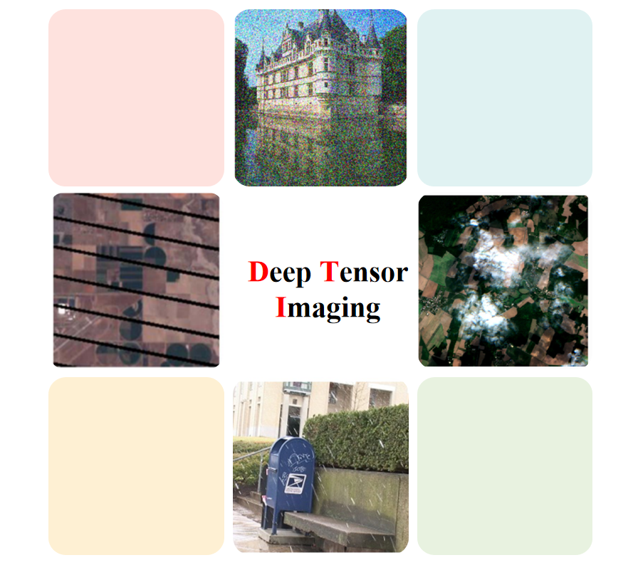

Experiences:
I am a Professor in the School of Mathematical Science at University of Electronic Science and Technology of China (UESTC).
In 2012, I received my Ph.D. in Applied Mathematics from UESTC, advised by Prof. Ting-Zhu Huang.
From 2013 to 2014, I worked with Prof. Michael Ng as a post-doc at Hong Kong Baptist University.
From 2016 to 2017, I worked with Prof. Jose M. Bioucas Dias as a visiting scholar at Instituto Superior Técnico.
My research interest is image processing, machine learning, and scientific computing.

News:
Fundings:
National Natural Science Foundation of China (国家自然科学基金面上项目, NSFC 12371456), 2024-2027
National Natural Science Foundation of China (国家自然科学基金面上项目, NSFC 61876203), 2019-2022
National Natural Science Foundation of China (国家自然科学基金青年项目, NSFC 61402082), 2015-2017
Academic Activities:
Jury member for PhD thesis defense (Skoltech, supervised by Professor Andrzej Cichocki)
Journal Reviewer:
CVPR, ICCV, ECCV, KDD, IJCAI, ACM MMIEEE Transactions on Pattern Analysis and Machine Intelligence
SIAM Journal on Imaging Sciences
SIAM Journal on Scientific Computing
SIAM Journal on Matrix Analysis and Applications Computing
SIAM Journal on Mathematics of Data Science
Advances in Computational Mathematics
Journal of Scientific Computing
Journal of Mathematical Imaging and Vision
Inverse Problems and Imaging
ISPRS Journal of Photogrammetry and Remote Sensing
IEEE Transactions on Image Processing
IEEE Transactions on Geoscience and Remote Sensing
IEEE Journal of Selected Topics in Signal Processing
IEEE Transactions on Signal Processing
IEEE Transactions on Circuits and Systems for Video Technology
IEEE Transactions on Cybernetics
IEEE Transactions on Neural Networks and Learning Systems
IEEE Transactions on Multimedia
ACM Transactions on Intelligent Systems and Technology
Neural Networks
Information Fusion
Signal Processing
Journal of Computational and Applied Mathematics
Applied Mathematical Modelling
Applied Mathematics and Computation
Applied Mathematics Letters
Journal of the Franklin Institute
Pattern Recognition
Information Science
Knowledge-Based Systems
Awards:
四川省科学技术进步奖一等奖(自然科学类)
四川省科学技术进步奖一等奖(科技进步类)
中国计算数学学会青年优秀论文竞赛二等奖
四川省学术和技术带头人后备人选
首届川渝科技学术大会优秀论文一等奖
首届四川省数学会应用数学奖二等奖
电子科技大学“校百人计划”
Reproducible Research: